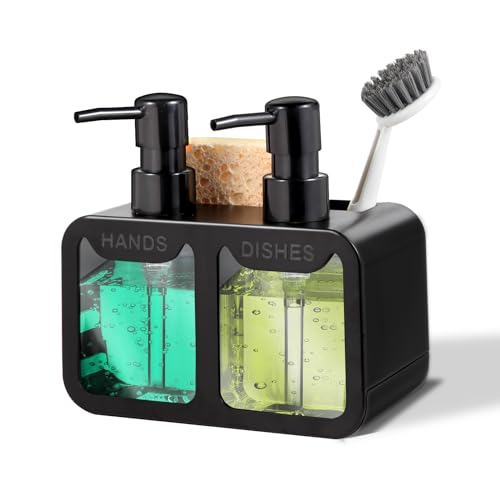
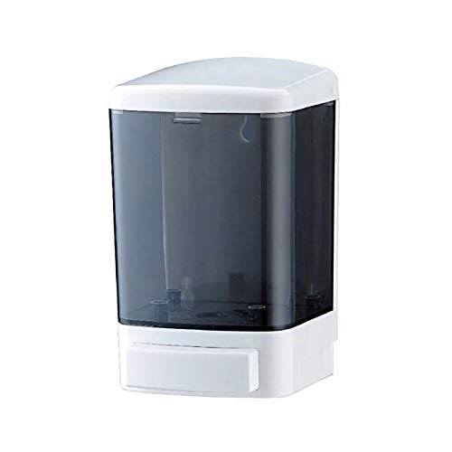
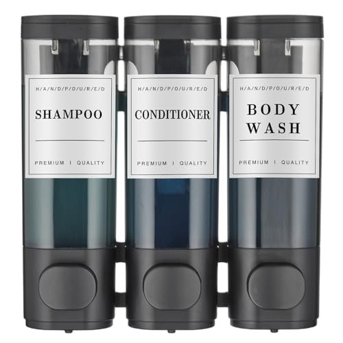
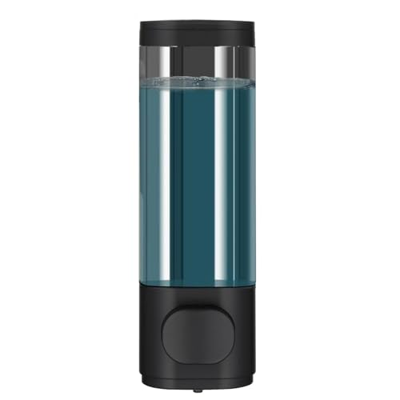
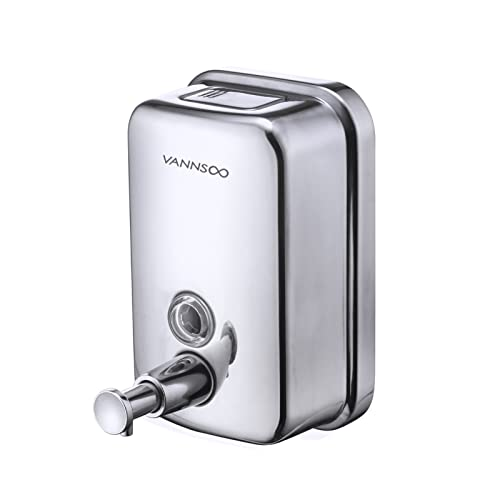
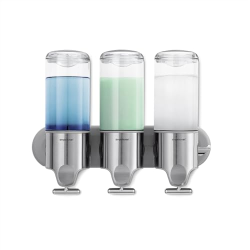
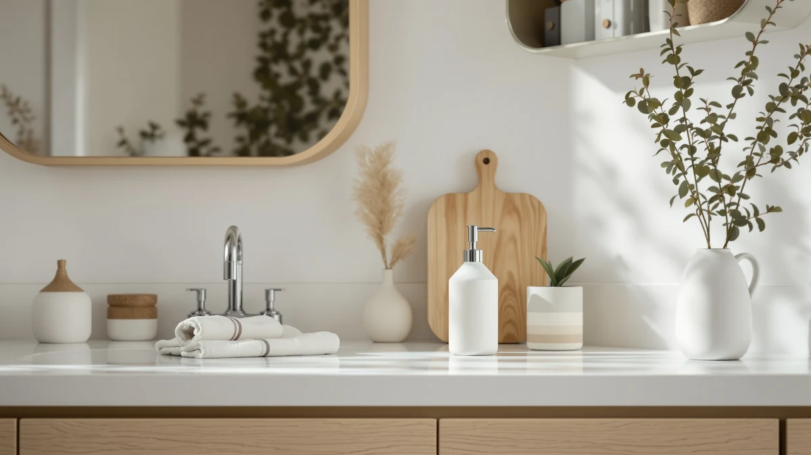
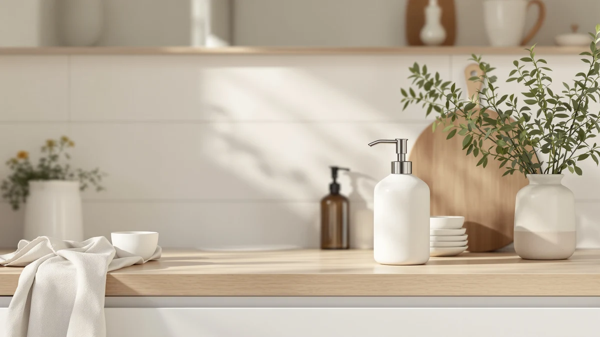

A soap dispenser is only as good as its pump.
Most dispensers look alike in a product photo. When one disappoints, the pump is usually why: a foaming mesh clogged by full-strength soap, a sensor that stops responding, a pump that dribbles or pulls air. We compare dispensers on the pump, the power source and the build, using spec sheets, current Amazon prices and what verified owners report.
Our 7 picks, side by side
From our full comparison of soap dispensers. Each one wins a specific job.
| Pick | Product | Price | Buy |
|---|---|---|---|
| Our Pick | Clear Soap Dispenser with Rust Proof PumpClear, cheap, and rust-resistant | $8.99 | Check price |
| Runner-Up |  Kitchen Soap Dispenser SetMatching, practical, and well-priced | $13.98 | Check price |
| Most stable |  Evhome Manual Soap Dispenser Kitchen Bathroom Wall Mounted Commercial SoapSturdy, weighted, and spill-resistant | $16.89 | Check price |
| Best for the shower |  Shampoo and Conditioner Dispenser ShowerShower-ready, wall-friendly, and refillable | $19.99 | Check price |
| Best space-saver |  Wall Mounted Hand Soap DispenserWall-mounted, slim, and space-saving | $8.89 | Check price |
| Best high-capacity |  VANNSOO Commercial Soap Dispenser Wall Mount Stainless Steel Manual Liquid PumpHigh-capacity, durable, and commercial-grade | $24.99 | Check price |
| Best splurge |  simplehuman Triple Wall Mount PumpsPremium, triple-chamber, and built to last | $99.99 | Check price |
Just published
New reviews and guides go up every day.

Cisily Kitchen Soap Dispenser Set Review

ABBI NIMO Ceramic Soap Dispenser Review

Jemisun Automatic Touchless Liquid Soap Dispenser Review

Rytoxilo Modern Kitchen Soap Dispenser Set Review
Find the right dispenser for your sink
Guides and reviews from across the site, grouped by the question they answer.
Install, refill and fix
- How to Refill a Soap Dispenser the Right Way (2026 Guide)Guide
- How to Choose Soap Dispenser PumpGuide
- Best How to Install Soap Dispenser on SinkGuide
- Best How to Install Soap Dispenser on WallGuide
- Best How to Clean Soap Dispenser PumpGuide
- Best How to Fix Soap Dispenser PumpGuide
+ 1 more in all articles
Kids and family
- Liquid Soap Dispensers for KidsComparison
- Best Soap Dispensers for ToddlersComparison
- The Best Touchless Soap Dispensers For kidsComparison
- The Best Foam Soap Dispensers For kidsComparison
- Best Soap Dispensers for Kids: 7 Top PicksComparison
- Hyever Cute Cartoon Dinosaur Hand Soap Pump ReviewReview
Kitchen sink
- Best Automatic Soap Dispenser for Kitchen SinkComparison
- The Best Touchless Soap Dispensers For kitchenComparison
- The Best Soap Dispensers For kitchenComparison
- Best Automatic Soap Dispensers for KitchenComparison
- The Best Black Soap Dispensers: Sleek Picks for Kitchen & BathComparison
- The Best Kitchen Foam Soap DispensersComparison
+ 11 more in all articles
Wall-mounted and shower
- The Best Commercial Soap Dispensers: Wall-Mount Picks for Offices & RestroomsComparison
- The Best Wall-mounted Foam Soap DispensersComparison
- Best Wall Mounted Touchless Soap Dispensers: 7 Top PicksComparison
- Best Soap Dispensers for Airbnb: 7 Top PicksComparison
- Best Soap Dispensers for Shower: 7 Top PicksComparison
- Aeakey 3-Chamber Shower Soap Dispenser ReviewReview
+ 21 more in all articles
Materials and style
- Best Soap Dispenser BrandsComparison
- What to Put Under Soap Dispenser: Complete GuideGuide
- Best Soap Dispenser with TrayComparison
- High Quality Soap DispenserComparison
- Beautiful Soap DispenserComparison
- The Best Glass Foam Soap DispensersComparison
+ 19 more in all articles
Touchless, foam or liquid
- Are Soap Dispensers Worth It: Complete GuideGuide
- The Best Touchless Soap Dispensers For bathroomComparison
- The Best Foaming Foam Soap DispensersComparison
- The Best Rechargeable Foam Soap DispensersComparison
- The Best Touchless Foam Soap DispensersComparison
- The Best Automatic Foam Soap DispensersComparison
+ 45 more in all articles
How we research
What we compare
- The pump: a liquid pump takes any soap straight from the bottle; a foaming pump needs soap thinned with water, about one part soap to four or five.
- Power: none for a manual pump; AA or AAA batteries or a USB-rechargeable battery for a touchless one, whose sensor and motor can fail.
- Placement and capacity: countertop, wall-mounted with adhesive or screws, or built into the sink, and how much the reservoir holds.
- Price: Amazon's current price, checked every night.
- What verified owners report after months of daily use.
What we don't do
We don't run a lab, and we don't claim to have installed or handled these products ourselves. Our picks come from published specifications, current Amazon prices and what verified owners report again and again.
Every Amazon link on this site is an affiliate link. It never decides the ranking.
Common questions
Foaming or liquid: which dispenser should I buy?
A foaming pump turns a little soap into lather, so a bottle goes further and the foam rinses off fast. It needs foaming soap or regular soap diluted with water, because full-strength soap clogs its fine mesh. A liquid pump takes any soap straight from the bottle and rarely clogs. Our foaming vs liquid comparison covers the trade-offs.
Are touchless soap dispensers worth it?
Often, in a kitchen or a bathroom shared with kids, because nobody touches the pump with dirty hands. The trade-off is power and parts: touchless models need batteries or regular charging, and the sensor and motor can fail where a manual pump keeps working. Give the unit some room, since a sensor placed too close to the faucet can fire when you reach past it. Our automatic vs manual comparison has the details.
Why has my soap dispenser pump stopped working?
Usually a clog or an air-lock, not a broken part. Dried soap blocks the mesh and valves, and a bottle left to run dry pulls air into the pump. A warm-water flush, then a dozen firm presses to re-prime, fixes most cases; our pump repair guide goes step by step.